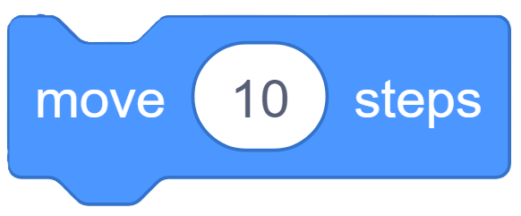
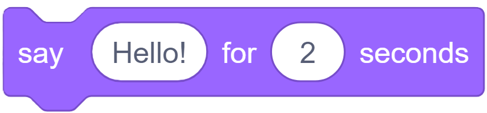
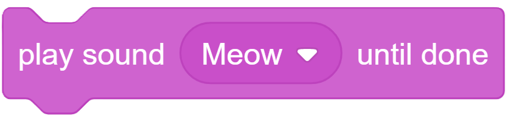

เรียนรู้การใช้กลุ่มบล็อกคำสั่งเบื้องต้น (Motion, Looks, Sound)
ในหน่วยการเรียนรู้นี้ เราจะมาทำความรู้จักและฝึกใช้งานกลุ่มบล็อกคำสั่งที่ใช้บ่อยที่สุด 3 กลุ่ม ได้แก่

ใช้สำหรับควบคุมการเคลื่อนที่และทิศทางของตัวละคร เช่น `move 10 steps` (ก้าวเดินไปข้างหน้า), `turn 15 degrees` (หมุนตัว), `go to x: y:` (ไปยังตำแหน่งที่ระบุบนเวที)

ใช้ควบคุมการแสดงออกและลักษณะภายนอกของตัวละคร เช่น `say Hello! for 2 seconds` (พูดข้อความ), `switch costume to...` (เปลี่ยนชุดตัวละคร), `change size by 10` (เปลี่ยนขนาด)

ใช้เพิ่มเสียงประกอบให้กับโปรเจกต์ เช่น `play sound Meow until done` (เล่นเสียงที่เลือก), `set volume to 100%` (ตั้งค่าระดับเสียง)
ลองต่อบล็อกคำสั่ง `move 10 steps` และตามด้วย `play sound Meow` เพื่อดูตัวละครเคลือนที่พร้อมมีเสียงร้องดูสิ!